Desktop Frequently Asked Questions (FAQ)
- Introduction
- Clarification of Terms Used
- VFS for Windows Server
- Usage
- How to Interpret Quotas
- Continuous File Upload to the Server Though No Modifications Made
- Syncing Stops When Attempting to Sync Deeper Than 100 Sub-Directories
- My Sync Folder Displays a Different Quota Than the Web Interface
- The Desktop App Shows Different File Sizes Than My Mobile App
- Sync Delay When Using a Network Drive
- Major Configuration Changes
- Error Messages
- Messages in the 'Not Synced' Tab
Introduction
Here you can find some of the most frequently asked questions about the ownCloud Desktop app.
Clarification of Terms Used
-
Polling
Polling is defined as the task where the Desktop app queries the server for changes - among other things. If the server responds with a change that had happened on the backend, the client will start syncing the changes after polling has finished. -
Sync
Syncing is defined as the task where any changes will be synchronized, no matter if they occurred in the Desktop app or on the server side. Syncing does not depend on former polling while polling can result in a sync. -
Local Discovery
Local discovery is defined as the task where the Desktop app looks for changes on the local filesystem. A local discovery can internally be enforced to check for changes that have been missed for example when the Desktop app was shut down during ongoing changes on the local filesystem. Any changes identified on the local filesystem trigger a sync after local discovery has finished.
VFS for Windows Server
Without claim of completeness, actuality or support, Windows Server releases that are based on builds starting with 1709 should come with the native system API that is required to use VFS. Windows Servers 2016 and lower do not have native VFS included and will not be able to use VFS therefore.
Usage
How to Interpret Quotas
When a quota has been defined, either as general value in ownCloud Server or in Infinite Scale at the personal space or on a project space, you can see additional info in your sync relationship about the quota values. If no quota has been set, these values are not shown for the particular sync relationship:
| ownCloud Server Quotas shown for the sync relationship |
Infinite Scale No quotas shown for the personal space or received shares, but for project spaces |
|---|---|
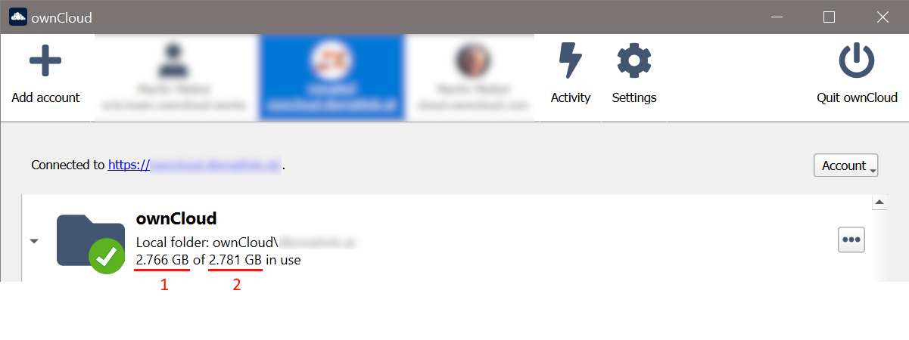 |
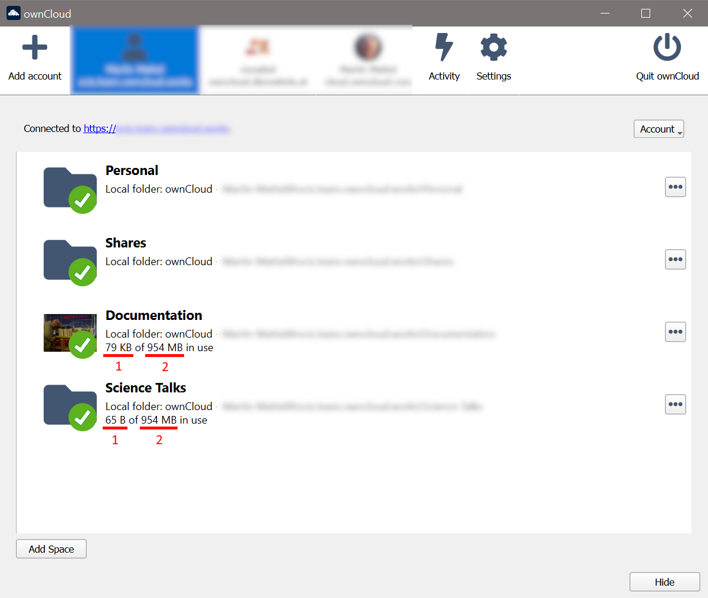 |
See the following table to interpret the numbers shown correctly:
| First Number (1) | Second Number (2) |
|---|---|
Data used in my quota + data used in external storages (a) (ownCloud Server only) + data used in other users' shares (a) (ownCloud Server only) = Total used in my quota |
Available quota + data used in external storages (a) (ownCloud Server only) + data used in other users' shares (a) (ownCloud Server only) = Total available in my quota |
ownCloud Server provides external storages and remote shares as folders. These folders do not count against the quota. To mitigate this situation in the Desktop app, the sizes of these folders are added to the quotas shown by the Desktop app automatically to avoid showing incorrect available space. In total, the quota values level out and no wrong differences are shown, though the absolute quota values may look higher than they are in reality - the absolute difference is correct. This difference shows if files to sync could be uploaded to the server successfully.
Note that with Infinite Scale, each space has its own sync relationship and therefore quota values show as they are defined for each.
Continuous File Upload to the Server Though No Modifications Made
It is possible that another program is changing the modification date of the file. If the file has an .eml extension (Windows Mail, Windows Live Mail), the Microsoft Indexer automatically and continually changes the file.
To solve this issue, you can:
-
Remove the extension from the indexer ()
-
Uninstall Windows Mail, Windows Live Mail. Note that when reinstalling, the issue reappears again. See Windows indexer changes modification dates of .eml files for more information.
-
Remove at your own risk the corresponding key for .eml files in the registry at
\HKEY_LOCAL_MACHINE\SOFTWARE\Microsoft\Windows\CurrentVersion\PropertySystem\PropertyHandlers
Syncing Stops When Attempting to Sync Deeper Than 100 Sub-Directories
The Desktop App has been intentionally limited to sync no deeper than 100 sub-directories. The hard limit exists to guard against bugs with cycles like symbolic link loops. When a deeply nested directory is excluded from synchronization it will be listed with other ignored files and directories in the "Not synced" tab of the "Activity" pane.
My Sync Folder Displays a Different Quota Than the Web Interface
When other users share data with you, it’s downloaded to the sync folder and counted as space used by the Desktop App, although it doesn’t affect your quota for storage usage. There are more factors taken into account when calculating the quota status. For more information, see the Storage Quotas in the User Manual.
The Desktop App Shows Different File Sizes Than My Mobile App
The file size values differ depending on the client you are using. Some operating systems like iOS and macOS use the decimal system (power of 10) where 1kB or one kilobyte consists of 1000 bytes, while Linux, Android and Windows use the binary system (power of 2) where 1KB consists of 1024 bytes and is called a kibibyte. So no reason to worry if you see different file sizes in your desktop client than on your mobile devices or the web interface.
Sync Delay When Using a Network Drive
Due to technical limitations, the Desktop app cannot detect local changes when the local sync folder is located on a mounted network volume. Only the full local discovery, which defaults to run every hour if not changed, will detect any changes and trigger the upload. If desired, a smaller local discovery value can be configured to sync local changes more often. For more details see the: Configuration File documentation.
Major Configuration Changes
I Want to Move My Local Sync Folder
The ownCloud Desktop App does not provide a way to change the local sync folder directly. However, it can be done in two ways:
-
Copy the folder and avoid a full re-sync:
-
Stop the Desktop App and edit the
localPath=line in the configuration file according your needs. -
Copy (or move) all your data from the current to the new location manually and start the Desktop App.
-
-
Create a new sync connection with a new location:
-
Remove the existing connection which syncs to the old directory.
To do so, in the Desktop App UI, which you can see below, click the drop-down menu .
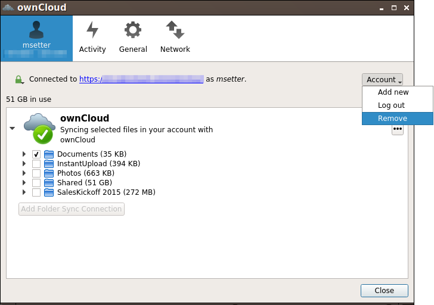
This will display a "Confirm Account Removal" dialog window. If you’re sure, click Remove connection.
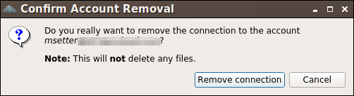
-
Add a new connection which syncs to the desired directory.
Click the drop-down menu .
This opens the ownCloud Connection Wizard, which you can see below, but with an extra option. This option provides the ability to either keep the existing data (synced by the previous connection) or to start a clean sync (erasing the existing data).
Be careful before choosing the "Start a clean sync" option. The old sync folder may contain a considerable amount of data, ranging into the gigabytes or terabytes. If it does, after the Desktop App creates the new connection, it will have to download all of that information again.
Instead, first move or copy the old local sync folder, containing a copy of the existing files, to the new location. Then, when creating the new connection choose "keep existing data" instead. The ownCloud Desktop App will check the files in the newly-added sync folder and find that they match what is on the server and not need to download anything.
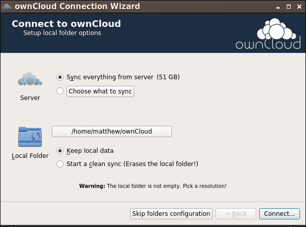
Make your choice and click Connect… This will then lead you through the Connection Wizard, just like when you set up the previous sync connection, but giving you the opportunity to choose a new sync directory.
-
I Want to Change My Server URL
Since changing server URLs is a potentially dangerous operation the ownCloud Desktop App does not provide a user interface for this change. Typically, server URL changes should be implemented by serving a permanent redirect to the new location on the old URL. The Desktop App will then permanently update the server URL the next time it queries the old url.
For situations where arranging for a redirect is impossible, url changes can be done by editing the config file. Before doing so make sure that the new url does indeed point to the same server, with the same users and the same data. Then go through these steps:
-
Shut down the ownCloud Desktop App.
-
Locate the configuration file
-
Open it with a text editor.
-
Find your old server URL and adjust it.
-
Save the file and start the ownCloud Desktop App again.
Error Messages
Warning Message for Unsupported Versions
Keeping software up to date is crucial for file integrity and security – if software is outdated, there can be unfixed bugs. That’s why you should always upgrade your software when there is a new version.
The ownCloud Desktop App talks to a server, e.g. the ownCloud server, so you do not only have to upgrade your Desktop App when there is a new version for it, also the server has to be kept up-to-date by your sysadmin. Starting with version 2.5.0, the Desktop App will show a warning message if you connect to an outdated or unsupported server:
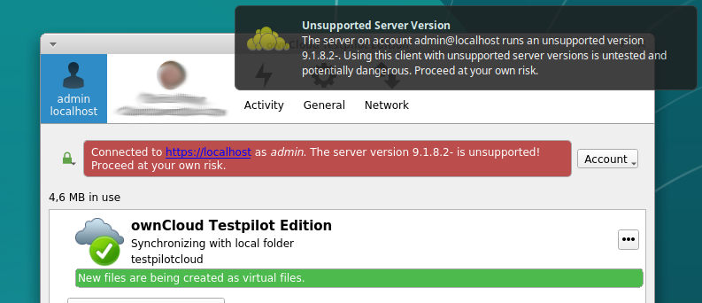
- Only ownCloud 10.0.0 or Higher Is Supported
-
If you encounter such a message, you should ask your administrator to upgrade ownCloud to a secure version because earlier versions are not maintained anymore. An important feature of the ownCloud Desktop App is checksumming – each time you download or upload a file, the Desktop App and the server both check if the file was corrupted during the sync. This way you can be sure that you don’t lose any files.
There are servers out there which don’t have checksumming implemented on their side, or which are not tested by ownCloud’s QA team. They can’t ensure file integrity, they have potential security issues, and we can’t guarantee that they are compatible with the ownCloud Desktop App.
- We Care About Your Data and Want It to Be Safe
-
That’s why you see this warning message, so you can evaluate your data security. Don’t worry – you can still use the Desktop App with an unsupported server, but do so at your own risk.
Multiple Accounts Sharing the Folder
Desktop App discovered multiple sync journals (SQLite database files) in the folder. That indicates that multiple Desktop Apps are using the same folder as a sync root. Under certain conditions it could also mean that there is an old .sync#HASH.db or .sync_#HASH.db in the folder.
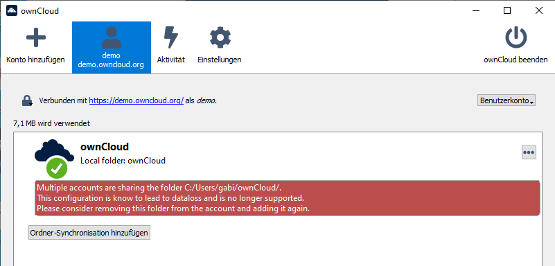
Resolve:
Such a file will have an old change date and usually can be removed.
Folder Is Used in a Folder Sync Connection
Similar to the above case, the Desktop App discovered one or more .sync_journal.db files in the directory. That means the folder is either already used by a different Desktop App for syncing or we again have an old SQLite database file in that folder. This can also happen if a user tries to import an old folder.
| Connect, folder already used | Add folder sync connection |
|---|---|
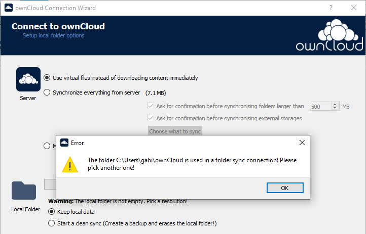 |
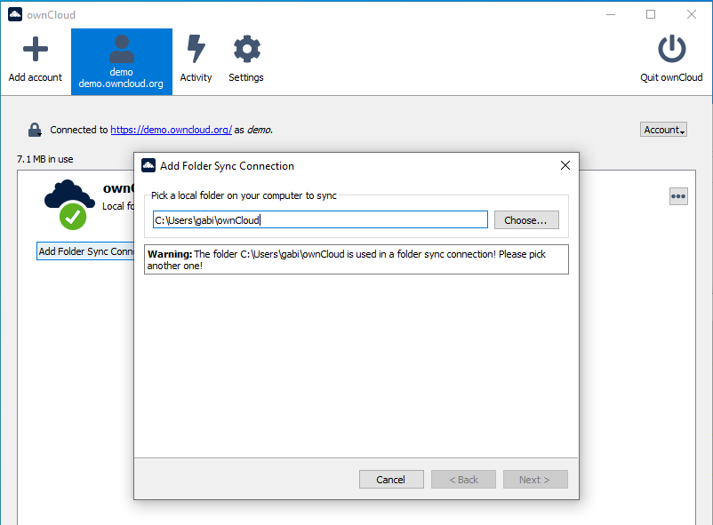 |
Resolve:
Such a file will have an old change date and usually can be removed.
Parent Folder Managed by Another Desktop App
This error can only happen with native Windows VFS. The Desktop App discovered that the folder is part of a subtree that is managed by another Desktop App, for example testpilotcloud. The difference to the next error is that we can’t be sure it’s a different Desktop App or an orphaned sync root.
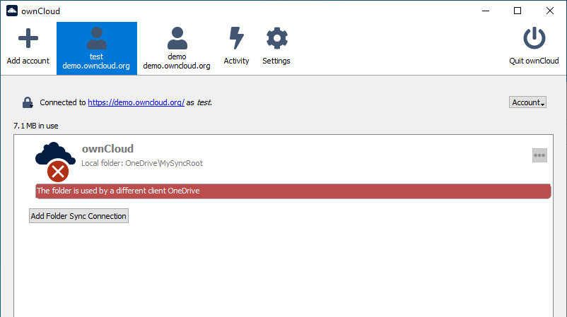
Both errors are windows only. In the future we will try to prevent the situation leading to this.
Resolve:
Pick another sync folder.
Folder Used by Different Desktop App
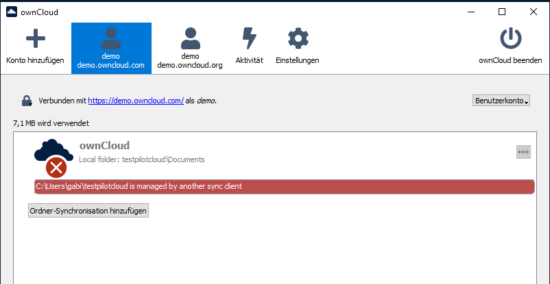
This error can only happen with native Windows VFS. Desktop App discovered that the folder is part of a subtree that is managed by another Desktop App, for example OneDrive.
Resolve:
Pick another sync folder.
Warning About Changes in Synchronized Folders Not Being Tracked Reliably
On Linux, when the synchronized folder contains a high number of subfolders, the operating system may not allow for enough inotify watches to monitor the changes in all of them.
In this case the Desktop App will not be able to immediately start the synchronization process when a file in one of the unmonitored folders changes. Instead, the Desktop App will show the warning and manually scan folders for changes at a regular interval (two hours by default).
This problem can be solved by setting the fs.inotify.max_user_watches sysctl to a higher value like 524288 permanently in the config file /etc/sysctl.conf or temporarily with the following command:
echo 524288 > /proc/sys/fs/inotify/max_user_watches.Messages in the 'Not Synced' Tab
When the Desktop app synchronizes, it clears the message list in the Not Synced tab before each synchronization starts and prints the result of the current synchronization to the tab during processing. After a full sync, incremental syncs are made and only content that is not in sync is processed. Therefore, any listed messages that got resolved no longer appear.